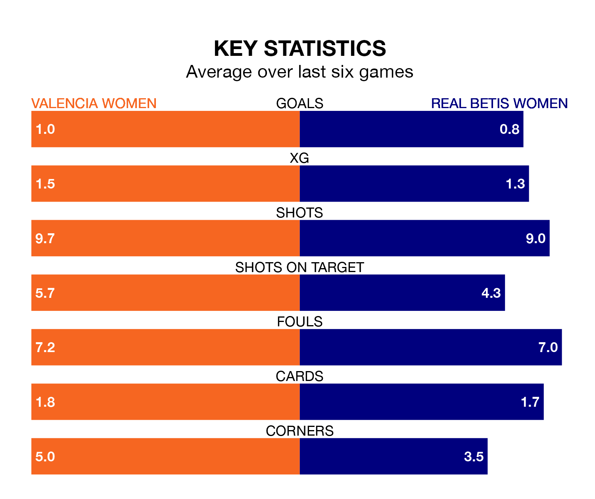

Real Betis Women make the journey to the Estadio Antonio Puchades to play Valencia Women on Sunday looking to pick up points to end their nine-game losing streak.
Betis Women's struggles have left them with no points from their last six Liga F matches, while their opponents have earned four from a possible 18.
In the last 10 years, Valencia and Betis Women have played each other on 15 occasions. They won five each, and they drew five times.
On average, Valencia scored 1.5 goals and Betis Women 1.3 in those matches.
Their last meeting was on October 21, when they played out a 2-2 draw.
Betis Women are 14th in the table after 18 games, of which they have won four and drawn one, earning 13 points.
Valencia are two places ahead of the visitors in 12th, with five wins and three draws putting them on 18 points.
With 17 goals in 18 games so far this season, Betis Women are scoring at below the league average rate with 0.9 goals per game. And they are conceding more than average, letting in 45 goals at a rate of 2.5 per game.
The home team are also below average scorers, with 1.2 goals per game, compared to a league average of 1.6. They have conceded 2.3 goals per game.
Valencia's last match was on February 17, a 3-1 win against Sporting de Huelva, with Ana Marcos Moral (two) and Jimena López Fuentes getting the goals for Valencia.
Betis Women lost 1-0 against Athletic Club Women last time out, also on February 17.
Updated: 09:34 (UTC), 08/03/24